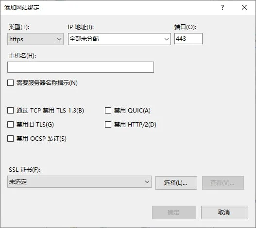

请访问原文链接：QUIC & HTTP3 Support：主流浏览器和服务端对 HTTP3 的支持情况（2021年12月更新） 查看最新版。原创作品，转载请保留出处。
作者主页：sysin.org
1. 相关概念
1.1 TLSv1.3
TLS 1.3 由 IETF 于 2018 年 8 月正式发布。
SSL 即 Secure Sockets Layer 安全套接字层。TLS 即 Transport Layer Security，传输层安全。TLS 是 IETF 在 SSL3.0 基础上设计的协议，实际上相当于 SSL 的后续版本。
TLS（Transport Layer Security）是一种加密协议，旨在通过 IP 网络提供安全通信。它是当今非常常见的协议，用于保护 Web 浏览器和 Web 服务器之间的 HTTP 通信。当使用 TLS 保护 HTTP 时，它通常被称为 HTTPS（HTTP Secure）。TLS/SSL 是安全传输层协议，是介于 TCP 和 HTTP 之间的一层安全协议，不影响原有的 TCP 协议和 HTTP 协议。
TLS 1.3 是时隔九年对 TLS 1.2 等之前版本的新升级，也是迄今为止改动最大的一次。针对目前已知的安全威胁，IETF（Internet Engineering Task Force，互联网工程任务组）制定 TLS 1.3 的新标准，使其有望成为有史以来最安全，但也最复杂的 TLS 协议。
1.2 OpenSSL 3.0
OpenSSL 项目开发和维护 OpenSSL 软件 - 一个强大的、商业级的、功能齐全的工具包，用于通用密码学和安全通信。OpenSSL 是 TLS/SSL 协议的开源实现，提供开发库和命令行程序。OpenSSL 使用 C 语言作为开发语言，拥有良好的跨平台性能，支持 Linux、Windows、BSD、Mac、VMS 等多个平台使用。
OpenSSL 3.0 是 OpenSSL 1.1.1 之后的重大更新版本，OpenSSL 3.0 是一个主要版本，并且不完全向后兼容以前的版本。大多数应用程序与 OpenSSL 1.1.1 一起工作仍将保持不变，只需要重新编译（尽管您可能会看到许多关于使用的编译警告已弃用的 API）。某些应用程序可能需要进行更改才能编译和工作正确，并且需要更改许多应用程序以避免弃用警告。我们整理了一个 迁移指南 描述 OpenSSL 3.0 与以前版本相比的主要区别。
OpenSSL 3.0 引入了许多新概念，应用程序开发人员和 OpenSSL 的用户应该知道。有关 libcrypto 关键概念的概述可在 libcrypto 手册页中查看。
OpenSSL 3.0 的一个关键特性是新的 FIPS 模块。我们的实验室正在测试模块并立即整理我们 FIPS 140-2 验证的文书工作。我们预计将在本月（2021 年 9 月）晚些时候提交。最终证书不是预计明年发布。
1.3 LibresSSL 是什么
LibreSSL 是 OpenBSD 开发者在 OpenSSL 爆出心脏出血漏洞之后 fork 的一个分支，旨在提供一个比 OpenSSL 更安全的替代品。它的 收藏夹图标（favicon） 就是 OpenSSL 心脏出血漏洞的图标。OpenBSD 是一个以安全著称的操作系统，LibreSSL 遵循其他 OpenBSD 项目的安全指导原则。
LibreSSL 与 OpenSSL 都是传输层安全（TLS，Transport Layer Security）协议的开源实现，如需了解 TLS 可参见其 维基词条 或自行搜索。
字面上看，LibreSSL 有两种断词方式：
- Libre-SSL，Libre 来自拉丁语，意为 “自由”，大家应该并不陌生，因为 LibreOffice 已经事实上取代了 OpenOffice，没准 LibreSSL 也会有这一天。
- Lib-Re-SSL，即重新实现的 libssl。
有些发行版已经将原有的 OpenSSL 替换为 LibreSSL 了，知名的有：
1.4 什么是 QUIC
主页：https://www.chromium.org/quic
描述：QUIC, a multiplexed transport over UDP（QUIC，一种基于 UDP 的多路传输）
QUIC 是一种建立在 UDP 之上的新型多路复用传输。HTTP/3 旨在利用 QUIC 的功能，包括缺少流之间的 Head-Of-Line 阻塞。
QUIC 项目最初是作为 TCP+TLS+HTTP/2 的替代方案，旨在改善用户体验，尤其是页面加载时间。IETF QUIC 工作组明确定义了传输QUIC) 和应用 (HTTP/3) 层之间的边界。并从 QUIC Crypto 迁移到 TLS 1.3。
由于 TCP 是在操作系统内核和中间件中实现的，因此几乎不可能对 TCP 进行重大更改。然而，由于 QUIC 建立在 UDP 之上，并且传输功能是加密的，因此它没有这样的限制。
QUIC 和 HTTP/3 over TCP+TLS 和 HTTP/2 的主要特性包括：
- 减少连接建立时间 - 一般情况下往返 0 次
- 改进的拥塞控制反馈
- 没有线头阻塞的多路复用
- 连接移植
- 传输可扩展性
- 可选的不可靠交付
相关 IETF 文件：
- QUIC 的与版本 属性 - 无关的 RFC8999
- QUIC：基于 UDP 的多路复用和安全传输 - RFC9000
- 使用 TLS 来保护 QUIC - RFC9001
- 拥塞控制和丢失检测 - RFC9002
- HTTP/3 - IESG 批准的 草案
- QPACK - IESG 批准的 草案
1.5 了解 HTTP/3
运行在 QUIC 之上的 HTTP 协议被称为 HTTP/3 (HTTP-over-QUIC)。QUIC 协议 (Quick UDP Internet Connection) 基于 UDP，正是看中了 UDP 的速度与效率。同时 QUIC 也整合了 TCP、TLS 和 HTTP/2 的优点，并加以优化。
-
特点:
- 减少了握手的延迟 (1-RTT 或 0-RTT)
- 多路复用，并且没有 TCP 的阻塞问题
- 连接迁移，(主要是在客户端) 当由 Wifi 转移到 4G 时，连接不会被断开
- 集成了 TLS 1.3 加密
-
HTTP/3 与 HTTP/1.1 和 HTTP/2 没有直接的关系，也不是 HTTP/2 的扩展
-
HTTP/3 将会是一个全新的 WEB 协议
-
HTTP/3 目前处于制订和测试阶段
1.6 总结
QUIC 是传输层协议，基于 UDP（对比的概念是 TCP），HTTP/3 是应用层协议，同协议层的概念是 FTP、SMTP、DNS 等等。
HTTP/3 默认使用 TLSv1.3 在 QUIC 传输层加密，而 OpenSSL 是实现 TLSv1.3 的一种开源软件和工具。
通过以下服务端软件将最终交付 HTTP/3（QUIC、TLSv1.3）给客户端，最终用户通过浏览器客户端（Firefox、Chrome、Safari 等）访问获得高效快速的互联网体验。
2. 服务端
2.1 F5 BIG-IP HTTP/3
官方参考：
- K60235402: Overview of the BIG-IP HTTP/3 and QUIC profiles
- K16240003: Configuring HTTP/3 discovery for BIG-IP virtual server
从 BIG-IP 15.1.0.1 开始，F5 引入了 HTTP/3 和 QUIC 作为实验特性。BIG-IP 系统的中 HTTP/3 和 QUIC profiles 分别基于 draft-ietf-quic-http-24 和 draft-ietf-quic-transport-24 实验性实现。
HTTP/3 是 HTTP/2 之后的下一个 HTTP 协议版本。与早期版本不同，HTTP/3 不使用 TCP，而是依赖 QUIC 作为 UDP 协议之上的底层传输协议。因此，QUIC 可以被视为提供了先前由 TCP、TLS 和 HTTP/2 提供的功能。
使用 TMUI 创建 HTTP/3 virtual server
具体步骤如下：
-
Log in to the Configuration utility.
-
Go to Local Traffic > Virtual Servers.
-
Select Create.
-
Provide appropriate values for Name, Destination Address/Mask.
-
For Service Port, enter an appropriate port number. For example, 4433.
-
For Protocol , select UDP . Note: HTTP/3 and QUIC use the UDP protocol. By selecting UDP, options for HTTP/3 and QUIC profiles will be available for selection in the Acceleration section of the page.
-
For Protocol Profile (Server) , select tcp . Note: As HTTP/3 server side is currently not supported, you cannot use any of the UDP protocols on the server side.
-
For HTTP Profile (Client), select http.
-
For SSL Profile (Client), select clientssl-quic.
-
For SSL Profile (Server), select an appropriate Server SSL profile to communicate with your pool member.
-
Optional: For Source Address Translation, select Auto Map.
-
Select the HTTP MRF Router check box.
-
For QUIC Profile (experimental) , select quic.
Note: To create your own QUIC profile, go to Local Traffic > Profiles > Services > QUIC (experimental) and select Create. -
For HTTP/3 Profile (experimental) , select http3.
Note: To create your own HTTP/3 profile, go to Local Traffic > Profiles > Services > HTTP/3 (experimental) and select Create. -
Under Default Pool, select your pool.
-
Select Finished.
使用 tmsh 创建 HTTP/3 virtual server
具体步骤如下：
-
Log in to the TMOS Shell (tmsh) by entering the following command: tmsh
-
To create an HTTP/3 virtual server, use the following command syntax:
1
create ltm virtual <vs_name> ip-protocol udp destination <ipaddress>:<port_number> pool <pool_name> source-address-translation {type <type>} profiles add { udp { context clientside } tcp { context serverside } <clientssl_profile> { context clientside } <serverssl_profile> {context serverside } <quic_profile> { context clientside } <http3_profile> { context clientside } <http_profile> httprouter }
For example, enter the following command to create an HTTP/3 virtual server that contains the attributes in the table that follows:
1
create ltm virtual quic_vs ip-protocol udp destination 10.10.10.10:4433 pool example_pool source-address-translation {type automap} profiles add { udp { context clientside } tcp { context serverside } clientssl-quic { context clientside } serverssl {context serverside } quic { context clientside } http3 { context clientside } http httprouter }
Option Value Virtual Server name quic_vs Destination Address/Mask 10.10.10.10 Service Port 4433 Protocol UDP Protocol Profile (Client) udp Protocol Profile (Server) tcp HTTP Profile http SSL Profile (Client) clientssl-quic SSL Profile (Server) serverssl Source Address Translation Auto Map HTTP MRF Router Enabled QUIC Profile (experimental) quic HTTP/3 Profile (experimental) http3 Pool example_pool
2.2 Nginx HTTP/3
技术预览
参考：Introducing a Technology Preview of NGINX Support for QUIC and HTTP/3
2020 年 6 月 10 日，NGINX 宣布了 NGINX 的官方 QUIC 和 HTTP/3 实现的初始版本，即 http_v3_module。这是一个技术预览，应该被视为实验性的 - 它不适用于生产环境。在编写本文时，QUIC 标准 尚未定稿，并且此初始版本是针对当前草案的一个子集实现的。
经过几个月的设计和开发，http_v3_module 已经准备好进行互操作性测试。我们也欢迎一般的反馈和代码贡献。请注意，http_v3_module 在 NGINX 开源主线开发分支中不可用（也不是 NGINX Plus 的任何版本）；因为它仍处于试验阶段，所以它是一个独立的开发分支，位于 https://hg.nginx.org/nginx-quic。
还请注意，这个 QUIC + HTTP/3 的实现是全新的，与 Cloudflare 作为其 quiche 项目 的一部分提供的修补程序无关。
对于那些熟悉 NGINX 配置的人来说，启用 QUIC + HTTP/3 非常简单。
1 | server { |
quiche：Cloudflare NGINX Build
早在 2018 年，Cloudflare 已经实验性的支持 QUIC 和 HTTP/3，只需要在控制台点击一个按钮即可启用，后来发布了一个可以本地部署的 nginx build，详见：Experiment with HTTP/3 using NGINX and quiche。
正式版（待发布）
预计在 2021 年底合并 nginx-quic development branch 到 NGINX mainline branch，并优化性能。参看：Our Roadmap for QUIC and HTTP/3 Support in NGINX。
有可能是 nginx 1.22 stable version？
2.3 Microsoft MsQuic
Windows Server 2022 和 Windows 11 中的 QUIC 已经可用。
2021 年 8 月发布的 Windows Server 2022 和 2021 年 10 月发布的 Windows 11，已经支持 QUIC，在 IIS 中新建站点时将默认启用。
Microsoft 正在开发开源的 QUIC library，叫做 MsQuic, 在 GitHub 基于 MIT license. MsQuic 是一个跨平台的通用库，它实现了 QUIC 传输协议。QUIC 正在由 互联网工程工作组（IETF）制定标准。MsQuic 是一个针对多种使用模式优化的客户机和服务器解决方案，并被多个 Microsoft 产品和服务使用。MsQuic 目前处于预览阶段，支持 Windows 和 Linux。
Microsoft 早期在最新的 Windows Insider Preview Builds 中支持 QUIC 和 HTTP/3，并将其开源，名为 MsQuic。终于在 2021 年 8 月发布的 Windows Server 2022 中集成了 MsQuic v1.0 (LTSC)。
在 Windows 上，MsQuic 依赖于 Schannel 对于 TLS 1.3 功能的内置支持。MsQuic 以 msquic.sys 驱动程序的方式封装在 Windows 内核之中，以支持内置的 HTTP 和 SMB 功能。用户模式应用程序使用 msquic.dll（从这里构建）并将其与他们的应用程序打包。
MsQuic v1.0 (LTSC)
MsQuic v1.0 是第一个官方支持的版本。此版本的主要交付产品是 Windows Server 2022 版本。目前没有正式的、已签名的二进制文件计划发布。Linux 支持被视为此版本的预览版 (sysin)。QUIC 规范目前 “提交给 IESG 发布”，因此此版本支持 v1 和草案 29 版本。
Important 未完全实现的 QUIC 协议功能：
- 0-RTT
- Client-side Migration
- Server Preferred Address
- Path MTU Discovery
已知问题：
GetParamforQUIC_PARAM_CONN_STATISTICSdoes not populateHandshake.*fields.
配置选项
以下是在 Windows Insider Build 20175 中的 IIS 绑定一个 HTTPS 站点的截图，可以看到如同 HTTP/2 的设置，TLS 1.3 和 QUIC 默认将启用，除非手动勾选禁用。

2.4 Apache httpd
暂时没有 Apache httpd 支持 HTTP/3 的消息。Apache 目前还没有承诺何时进行相关的支持工作。（笔者无法查询到相关资料，仅供参考。）
LiteSpeed Web Server 是 Apache 的替代品。它可以直接加载 Apache 配置文件，并与所有最流行的控制面板集成。众所周知，LSWS 可以在不牺牲性能的情况下节省资源。由于 LiteSpeed Web Server 取代了 Apache 的所有功能，它简化了使用，并使向新服务器的过渡变得轻松方便。
参看 Enable or Disable QUIC and HTTP/3
请注意：LiteSpeed Web Server 是商业软件，免费许可有明显限制，无法简单用来替代 apache httpd。
2.5 HAProxy
2021.11.23，HAProxy 2.5 early support for QUIC and HTTP/3。
您可以接收 HTTP/3 请求，并在您的 HAProxy 实例上处理它们或将它们转发到 HTTP/1、HTTP/2 或 FastCGI 后端服务器。
该功能处于预实验阶段，仅用于开发。错误处理仍然非常有限。
您可以 构建具有 QUIC 支持 的 HAProxy 使用，以了解该功能的内部工作原理，并且使用 QUICTLS SSL 库替代 OpenSSL。
2.6 Tomcat
暂无相关消息
2.7 Varnish
测试中，参看：QUIC visions of OSI
2.8 小结
2021 年底了，正式支持 QUIC 和 HTTP/3 的只有 F5 和 Microsoft 两家的商业产品，比较遗憾，开源产品都无法友好支持。
3. 客户端
| Browser | Version implemented (disabled by default) | Date | Version shipped (enabled by default) | Date |
|---|---|---|---|---|
| Chrome | Stable build (79) | December 2019 | 87 | April 2020 |
| Firefox | Stable build (72.0.1) | January 2020 | 88 | April 2021 |
| Safari | Safari Technology Preview 104 | April 2020 | N/A | N/A |
| Edge | N/A | N/A | 87 | April 2020 |
As of April 2021, the HTTP/3 protocol is an Internet Draft and has multiple implementations. Google Chrome supports HTTP/3 by default since April 2020 (including Chrome for Android, as well as Microsoft Edge, which is based on it).
参考：
https://en.wikipedia.org/wiki/HTTP/3
https://developers.cloudflare.com/http3/intro
3.1 Firefox
Firefox 88 开始默认支持 HTTP/3，无需配置。
Firefox 75 及以上版本支持 HTTP/3（具体版本网上资料有些差异，现在都已经默认支持，不做深究）。
启用方法：在地址栏输入’about:config’，配置 network.http.http3.enabled = true
通过 “Web 开发者” 可以看到 “版本: HTTP/3” “协议版本:: TLSv1.3”
3.2 Chrome
在浏览器地址栏输入 chrome://flags 回车，搜索 “quic” 可以看到 “Experimental QUIC Protocol” 点击下拉框选择 “Enabled”。
Chrome 83 及以上版本支持 HTTP/3，使用命令行增加如下启动参数：
1 | ./chrome --enable-quic --quic-version=h3-27 |
Running on Windows：
1 | cd C:\Users\$USER\AppData\Local\Google\Chrome\Application |
(replace $USER with the name of your account on Windows)
Running on macOS：
1 | /Applications/Google\ Chrome.app/Contents/MacOS/Google\ Chrome --enable-quic --quic-version=h3-27 |
Microsoft Edge (based on Chromium) 与 Chrome 同步支持，例如在 macOS 中运行 Edge：
1 | /Applications/Microsoft\ Edge.app//Contents/MacOS/Microsoft\ Edge --enable-quic --quic-version=h3-27 |
3.3 Safari
Safari Technology Preview Release 104 which was just released has added HTTP3 as an experimental feature. To enable it, you’ll first need to enable the “Develop” menu through its settings.
macOS Big Sur 11 和 iOS 14 中的 Safari 开始实验性的支持 HTTP/3，但是默认没有启用，开启方法如下：
在 macOS Big Sur 11 中的 Safari 14 （或更高版本），偏好设置…–高级，勾选【在菜单栏中显示“开发”菜单】。然后在点击“开发”菜单–实验性功能，点击勾选 HTTP/3。

在 iOS 14 和 iOS 15 中，设置–Safari 浏览器–高级–Experimental Features，可以找到 HTTP/3 并点击启用。
3.4 Curl
文档显示 Curl 7.66 及以上支持 HTTP/3，使用 --http3 参数，但实际上需要额外配置才能支持！
-
Ubuntu 20.04 自带 7.68 但不可直接使用
-
CentOS 8 自带 7.61，更新也不可直接使用：
1 | rpm -Uvh http://www.city-fan.org/ftp/contrib/yum-repo/rhel8/x86_64/city-fan.org-release-2-2.rhel8.noarch.rpm |
- macOS 10.15.5 自带 7.64，更新后也不可直接使用：
1 | brew install curl |
报错如下：
1 | curl --http3 -s -o /dev/null -v https://sysin.org |
解决办法：创建支持 HTTP/3 的 curl：参看 HTTP3 (and QUIC)
ngtcp2 version（Linux）
- Build with OpenSSL
Build (patched) OpenSSL
1 | git clone --depth 1 -b openssl-3.0.0+quic https://github.com/quictls/openssl |
Build nghttp3
1 | cd .. |
Build ngtcp2
1 | cd .. |
Build curl
1 | cd .. |
For OpenSSL 3.0.0 or later builds on Linux for x86_64 architecture, substitute all occurances of “/lib” with “/lib64”
- Build with GnuTLS
Build GnuTLS
1 | git clone --depth 1 https://gitlab.com/gnutls/gnutls.git |
Build nghttp3
1 | cd .. |
Build ngtcp2
1 | cd .. |
Build curl
1 | cd .. |
quiche version（Linux）
- build
Build quiche and BoringSSL:
1 | git clone --recursive https://github.com/cloudflare/quiche |
Build curl:
1 | cd .. |
If make install results in Permission denied error, you will need to prepend it with sudo.
macOS：Curl + Quiche
Homebrew formula for curl + quiche to easily build and test HTTP/3 on MacOS.
Requirement：
Install homebrew from https://brew.sh/
Build：
This will replace your current curl installation. Run the following commands to install required dependencies and to build curl with quiche support.
- Uninstall curl if you already have:
1 | brew remove -f curl |
- Build curl with quiche:
1 | brew install -s https://raw.githubusercontent.com/cloudflare/homebrew-cloudflare/master/curl.rb |
2020.11.13 更新：
由于 brew 版本更新，报错如下：
Error: Calling Non-checksummed download of curl formula file from an arbitrary URL is disabled! Use ‘brew extract’ or ‘brew create’ and ‘brew tap-new’ to create a formula file in a tap on GitHub instead.
解决方法：下载后在安装
1 | curl -LO https://raw.githubusercontent.com/cloudflare/homebrew-cloudflare/master/curl.rb |
At the end curl binary will be installed on “/usr/local/opt/curl/bin”, so you need to add to your $PATH
1 | ln /usr/local/opt/curl/bin/curl /usr/local/bin/curl |
Check if curl with H3 support is built properly:
1 | curl --help | egrep 'alt-svc|http3' |
Now, you can try curl on any H3 enabled sites.
1 | curl --http3 -I https://sysin.org |
用法
Use HTTP/3 directly:
1 | curl --http3 https://nghttp2.org:4433/ |
Upgrade via Alt-Svc:
1 | curl --alt-svc altsvc.cache https://quic.aiortc.org/ |
See this list of public HTTP/3 servers
3.5 在线检测网站

文章用于推荐和分享优秀的软件产品及其相关技术，所有软件默认提供官方原版（免费版或试用版），免费分享。对于部分产品笔者加入了自己的理解和分析，方便学习和研究使用。任何内容若侵犯了您的版权，请联系作者删除。如果您喜欢这篇文章或者觉得它对您有所帮助，或者发现有不当之处，欢迎您发表评论，也欢迎您分享这个网站，或者赞赏一下作者，谢谢！
 支付宝赞赏
支付宝赞赏
 微信赞赏
微信赞赏
赞赏一下